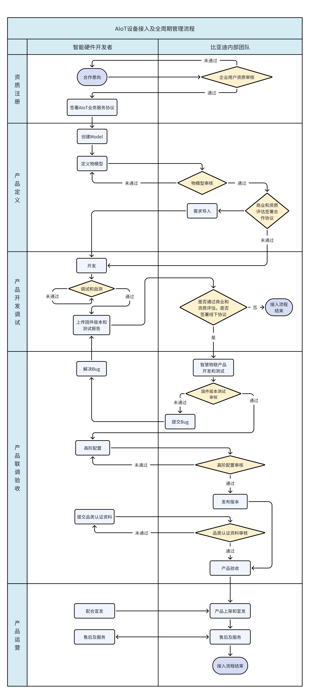
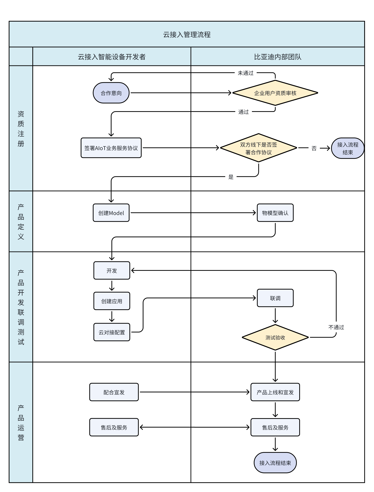

比亚迪AIoT业务接入指南
写在前面：
本文旨在为有意愿接入比亚迪智能硬件生态的各位伙伴提供指引，帮助大家快速将产品接入比亚迪生态开放平台AIoT业务，各位商务、产品、研发同学能够在本文清楚地找到问题的解决办法。经历若干智能硬件项目，我们发现大多数开发过程中遇到的问题是类似的，因此我们总结经验，以文档的形式呈现给各位开发者，帮助各位能够在产品开发的过程中节约开发时间，提高开发效率，提升产品一次开发成功率。
注意：完成demo产品接入开发之后，如成为比亚迪供应商则需完成供应商招标采购流程，如成为比亚迪分成合作伙伴则需要完成对应的商务合作流程，demo开发完成不代表完成供应商招标，不代表成为分成合作伙伴。
1. 前提条件（商务同学请仔细阅读）
1.1 AIoT业务商务模式分为供应商和分成合作两种模式。供应商模式需联系比亚迪资源开发（采购）部门，根据相关人员的引导，完成供应商资质注册，保密协议签署等一系列工作；如果您想以分成合作模式加入我们，请前往了解【文档中心-营销渠道-规则中心】，并提交工单，我们将为结合当前生态规划与业务需求进行综合评估。
1.2 双方对产品形态进行初步沟通，共同确定联合开发设备的基本功能和开发范围。
1.3 确定合作意向后，开发者按照“AIoT业务指引”，将产品接入比亚迪生态开放平台AIoT业务。
1.4 向⽐亚迪申请协议⽂件和设计开发要求，商务获取⽂件后同步给内部产研同事。
2. AIoT业务指引（开发者请仔细阅读）
2.1 资质注册审核
（1）如果您未个人认证，请前往【个人中心-去认证-个人认证】，完成个人资料的认证并通过审核。
（2）如果您已经完成个人认证，且您的企业未在比亚迪生态开放平台创建，如果您担任企业在本平台的超级管理员，请前往【个人中心-企业信息】创建企业，完成企业资质审核；
（3）如果您已经完成个人认证，且您的企业已经在比亚迪生态开放平台创建并完成了资质审核，请您线下联系该企业超级管理员，提供手机号给超级管理员，由超级管理员在本平台【个人中心-企业管理】中添加您为该企业成员。当您被添加到该企业后，前往【个人中心-个人资料】切换个人身份到企业身份，则可以进行管理中心AIoT业务的各项操作。
2.2 产品定义
- 添加Model
创建Model，填写厂商（必填）、硬件版本（必填）、设备商品名（必填）、类型（必填）、接入方式（必选）、通讯协议（必选，目前：BLE、BT）、设备升级方案（必选，目前：备份升级、AB分区升级、不升级）提交，自动进行ModelId分配；
选择对应的接入方式：直连接入、云云对接、云设备接入。接入方式介绍如下表 2-1。
注意：产品接入方式需要和比亚迪协商并达成一致，防止出现不能接入比亚迪智慧生态的情况。
| 接入方式 | 通信方式 | 适用场景 | 举例 |
|---|---|---|---|
| 直连接入 | BLE/BT | 车机大屏、车机智能语音控制的车载低功耗智能设备 | 车内的儿童安全座椅、按摩眼罩、游戏手柄、麦克风等 |
| Wi-Fi（待开放） | 车机大屏、车机智能语音控制的，数据传输需要高带宽的智能设备 | 宠物安全座（视频显示） | |
| 云云对接 | 三方云OAuth2授权比亚迪云 | 车端远程控制家中智能设备 | 车机App和车机智能语音控制家中智能家电，如空调、扫地机器人等 |
| 云设备接入 | 近场BLE，远场4/5G、NB-IoT | 某些智能设备近车连接，远车使用 | 便携类车 |
表 2-1 AIoT业务多种接入方式
- 定义物模型
开发者定义物模型之前，需要先查阅平台《⽐亚迪智能设备开放接⼊协议》（通过企业认证并签署《比亚迪AIoT业务服务协议》后可查看该协议），借助开放平台提供的物模型低代码开发在线工具，制作完成后提交审核，审核未通过会进行驳回，开发者结合驳回原因修改之后重新提交审核；
- 产品开发及提交固件版本（仅面向直连接入）
查阅平台《⽐亚迪智能设备开放接⼊协议》和《BYD乘用车IoT设备OTA升级协议》（通过企业认证并签署《比亚迪AIoT业务服务协议》后可查看该协议），进行产品开发，并在开放平台提交对应设备固件版本；
- 固件版本测试（仅面向直连接入）
获取“短距IoT协议测试助手”（通过企业认证并签署《比亚迪AIoT业务服务协议》后可查看该工具），完成BLE测试和固件版本测试，并上传测试报告到平台，提交固件版本和关联测试报告审核；
- 等待平台审核（仅面向直连接入）
根据平台要求，等待固件版本平台审核，一般审核周期为5个工作日；
- 高阶配置（仅面向直连接入）
开发者提交产品说明书、产品主图、产品卖点及多媒体素材（图片）等核心信息，多维度展示产品特性，最终呈现在车机智慧物联App中。
- 固件版本发布（仅面向直连接入）
当平台完成业务认证审核后，并通过固件测试，平台将固件版本发布；
2.3 AIoT设备接入及管理流程
2.3.1 直连接入及管理流程

图 2-1 AIoT设备接入及管理流程
2.3.2 云接入及管理流程
云云对接和云设备接入都遵从如下图 2-2 云接入管理流程。该流程仅面向线下已签署合作协议的企业开发者。

图 2-2 云接入管理流程
3. 文档和工具说明（产品/研发请仔细阅读）
3.1 直连接入
为⽅便各类产品快速直连接⼊比亚迪生态开放平台-AIoT生态，⽐亚迪设计了⼀套系统化的协议-《⽐亚迪智能设备开放接⼊协议》、《BYD乘用车IoT设备OTA升级协议》，以此为基础开发的智能设备，能够完美地融⼊⽐亚迪的智能座舱领域，实现产品联动。该协议介绍了⻋载IoT设备与⽐亚迪智能座舱之间的通信协议，以⽐亚迪智能座舱为主设备，各类接⼊到⽐亚迪智能座舱的IoT设备为从设备，重点介绍了⽆线通信数据交互机制。
为了帮助开发者快速验证产品能⼒，比亚迪开发了一款IoT自动化测试工具App⸺“短距IoT协议测试助手”，该工具可以帮助开发者快速完成功能验证，提高设备接入效率，适⽤于所有基于《⽐亚迪智能设备开放接⼊协议》、《BYD乘用车IoT设备OTA升级协议》开发的智能设备。该工具支持设备BLE测试和OTA测试，对基于协议开发的设备固件进行测试验证后，生成测试报告，并将对应的固件包和测试报告，上传到比亚迪生态开放平台，提供给比亚迪进行审核和发布。
可参考【文档中心-开发套件-AIoT套件-直连接入套件】。
3.2 云云对接
云云对接主要应用在车家互联——车控家的场景。云云对接，需要三方企业和比亚迪之间完成线下合作协议的签署，然后展开联调，三方企业可依据平台开放的协议进行开发。平台流程使用说明可参考【文档中心-开发套件-AIoT套件-云云对接套件】。
生态开放平台为云云对接提供的能力和服务：
- 开放平台为云云对接提供了web端接入流程，以及测试环节。在完成企业资质认证并签署AIoT业务协议后，前往【管理中心-AIoT服务平台-产品接入】产品清单，创建产品时接入方式选择“云云对接”，然后前往的应用管理和云对接配置，完成对应的应用配置和云对接授权信息配置。
- 开放平台向签署AIoT业务协议的企业用户开放《比亚迪智能设备云云对接协议》。用户前往【管理中心-AIoT服务平台-开发与设计资源-软件开发协议】即可看到该云云对接协议。
3.3 云设备接入
云设备接入适用于具备近场通信和4G/5G的生态设备。平台流程使用说明可参考【文档中心-开发套件-AIoT套件-云设备套件】。
生态开放平台为云设备接入提供的能力和服务：
- 开放平台为云设备接入提供了web端接入流程，以及测试环节。在完成企业资质认证并签署AIoT业务协议后，前往【管理中心-AIoT服务平台-产品接入】产品清单，创建产品时接入方式选择“云设备接入”，然后前往的应用管理和云对接配置，完成对应的应用配置和云对接授权信息配置。
- 开放平台向签署AIoT业务协议的企业用户开放《比亚迪智能云设备接入协议》。用户前往【管理中心-AIoT服务平台-开发与设计资源-软件开发协议】即可看到该云设备接入协议。
4. 协议开发说明（产品/研发请仔细阅读）
4.1 直连接入协议
当您完成企业资质认证并签署AIoT业务协议后，可查阅《比亚迪智能设备开放接入协议》。
接入比亚迪AIoT业务生态请按照上述协议开发，该协议支持BLE SIG定义的标准服务、自定义的基础服务与自定义的抽象服务，支持内容如下：
- BLE SIG标准服务：Device Information Service，Battery Service，Current Time Service，Device Time Service.
- 自定义基础服务：AutoIot Device，Information Service，AutoIot Battery Service，AutoIot Battery Service，AutoIot Current Time Service，AutoIot Device Time Service.
- 自定义抽象服务：Switch Service（开关服务），Mode Service（模式服务），Event Service（事件服务），State Service（状态服务），Time Service（时间服务），Rotation Service（旋转服务），Temperature Service（温度服务），OTA Service（远程升级服务）. 各服务解释：
开关服务：包括但不限于各种大功能、子功能开关；同时包括各种场景、模式等任意开关服务。
模式服务：包括狭义的产品内各类模式，同时也可以定义同一功能的各档位为模式服务的内容。
时间服务：包括但不限于各类与时间相关的功能，例如定时或者延时等功能。
旋转服务：包括但不限于各类机械运动，转动或者平动最终都会归结为电机的旋转。
温度服务：包括但不限于各类与温度相关的功能，例如升温或者恒温等功能。
OTA服务：产品能够支持远程升级服务的需要考虑。
事件、状态服务：其余各类抽象功能，均可利用事件或者状态服务进行描述，若有需要，可联系比亚迪平台相关方。
产品功能开发过程中，遵循开发范围最小原则，服务类型在以上三者中选择满足功能设计的其中一种，当前自定义抽象服务无法全部支持时，可考虑添加自定义抽象服务（添加服务请联系比亚迪平台）。具体协议内容请查询上述协议文档。
4.2 云云对接协议
当您完成企业资质认证并签署AIoT业务协议后，可查阅《比亚迪智能设备云云对接协议》。
4.3 云设备接入协议
当您完成企业资质认证并签署AIoT业务协议后，可查阅《比亚迪智能云设备接入协议》。
5. 开发者调试和自测试说明（产品/研发同学请仔细阅读）
“短距IoT协议测试助手”App是比亚迪公司根据《⽐亚迪智能设备开放接⼊协议》、《BYD乘用车IoT设备OTA升级协议》制作的一款工具。该工具方便开发者验证IoT设备的协议，也可以验证已经上传到云端的固件版本，并可自动生成测试报告，上传到比亚迪云端。
该工具分为“IoT设备的BLE测试”和“IoT设备的OTA测试”两部分，开发者通过开放平台的账号登录该工具。
5.1 IoT设备的BLE测试
开发者可以配置通讯参数相关字段，App进行组装之后进行发送，完成如下功能测试校验：
- 完成“SIG标准Service”或“自定义基础Service”和“自定义抽象Service”的UUID和Property测试校验；
- 完成“标准Characteristic”和“自定义Characteristic”的UUID和Property测试校验；
步骤：扫描蓝牙设备->连接蓝牙设备->MTU协商->自动进入Service列表，进行自测试->生成测试报告并上传到开发者平台->将固件和测试报告提交到比亚迪审核->比亚迪组织相关的主干测试和量产测试->测试过程中有问题通过平台将日志反馈给开发者；
5.2 IoT设备的OTA测试
- 开发者可以通过该工具提供的OTA测试能力，进行固件刷包和压力测试，完成测试后自动生成测试报告。开发者上传测试报告到开放平台后，进行提交审核，比亚迪会开展固件版本后续联调验证工作，联调过程中，固件有相应的问题会将相关日志通过平台传递给开发者。
- 完成IoT设备“固件刷包测试”，另外，包括3个异常场景测试：帧CRC错误、文件CRC错误、帧序号错误；
- 完成IoT设备“固件压力测试”；
- 步骤：扫描蓝牙设备->连接蓝牙设备->选择测试类型（固件刷包和压力测试）->选择对应的固件版本->开始进行测试->生成测试报告并上传到开发者平台->将固件和测试报告提交到比亚迪审核->比亚迪组织相关的主干测试和量产测试->测试过程中有问题通过平台将日志反馈给开发者；
过程中有任何问题请咨询⽐亚迪平台，我们会搭建专⻔的沟通渠道为⼤家解决问题。
6. 费用和样件需求（商务同学请仔细阅读）
6.1 产品demo研发联调过程中，如需开发费用请提前联系资源开发部门商讨，比亚迪原则上不提供demo阶段开发费用。
6.2 在联调过程中，须提供不少于五个样件供比亚迪方测试验证，联调验证完成后比亚迪会将样品寄回。
6.3 在样品送测联调前，需要通过“短距IoT协议测试助手”成功完成BLE测试，并上传测试报告；需要刷机的固件版本，也提前上传到服务器，并通过“短距IoT协议测试助手”成功完成OTA测试，并上传测试报告。
7. 常见问题解答
7.1 关于蓝牙模块选型
该协议对蓝牙模块选型无要求，通用蓝牙模块也可支持协议能力，建议使用5.0及以上版本的芯片，提高传输效率，降低传输时延。
7.2 关于广播间隔
建议广播发送间隔在20ms至100ms之间，广播周期太长，影响IoT网关扫描成功率。
7.3 notify上报内容
当设备的某一characteristic状态发生变化时，只需将该characteristic状态通过notify上报，无需将所有characteristic的状态上报。
7.4 关于service对应的20个characteristic
每个service的characteristic按需添加即可，无需把20个characteristic全部添加。
7.5 关于OTA升级
每个固件版本升级，固件升级包写入时，不清除原有固件信息，升级成功之后再删除老版本。